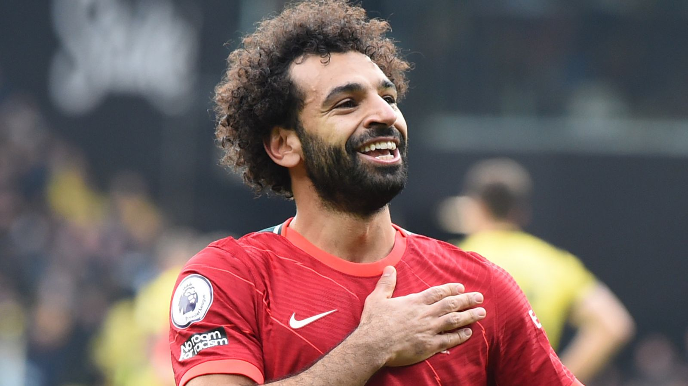

Mohamed Salah
Mohamed Salah is one of the most prolific forwards in European football and a Champions League and Premier League winner with Liverpool. ohamed Salah is an Egyptian footballer who plays as a forward for the Egyptian national team as well as Liverpool. The Egyptian has been an unstoppable scorer since joining the Reds from AS Roma in the summer of 2017, following up an historic 44-goal debut season with another 27 strikes in his second campaign at Anfield after he had signed a new contract with the club in the summer of 2018.In 2019-20, Salah topped the team’s scoring charts with 23 strikes in all competitions as he helped the club lift their first FIFA Club World Cup and Premier League titles and, in October 2020, a typically-prolific start to the 2020-21 season saw him become the 17th player in Liverpool FC history to reach the landmark of 100 goals for the club.A talisman for his country, Salah quickly became a fan favourite at Anfield and formed part of a fearsome attacking trio with Roberto Firmino and Sadio Mane.